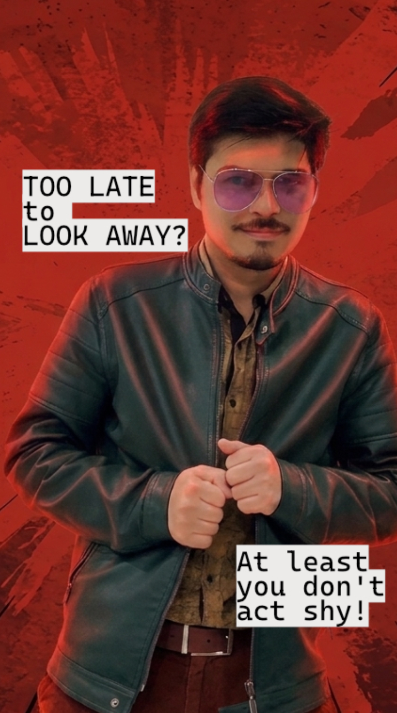
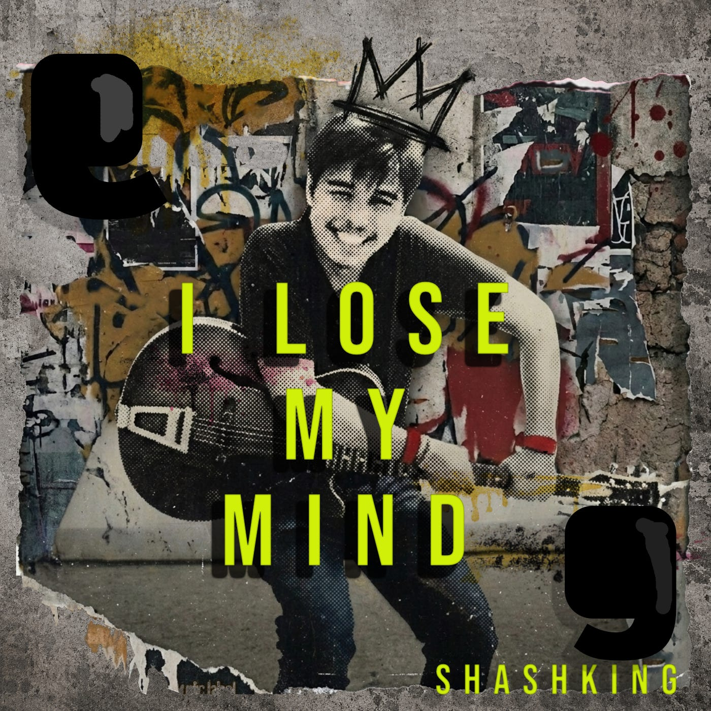

LAUKI MIL GAYI SASTE MEIN
0:36A humorous original release, produced and released under the shashKing name.
Original tracks, hype anthems, and the odd game soundtrack: written, performed, and produced under the shashKing name, when the keyboard isn't busy shipping games.
← Back to Home
shashKing's own Spotify playlist, including singles like Lauki Mil Gayi Saste Mein, the game-anthem Shera, and the work-in-progress single I Lose My Mind, currently streaming in preview.

shashKing (Shashaank Singh in the credits) is an indie game developer, technical product manager, XR architect, and multimedia creator who also writes, performs, and produces original music on the side. Lauki Mil Gayi Saste Mein started as a humorous homemade single and grew into an extended mix streaming everywhere; Shera became the anthem for the AR superhero game of the same name, set in his Mahashakti universe; and I Lose My Mind is a confidence-anthem-turned-work-in-progress single, currently streaming in preview on Spotify.
The writing process shows up in public too: shashKing keeps a Substack journal on the songs as they come together, the same way he logs devlogs for his games.
A humorous original release, produced and released under the shashKing name.

The extended mix of the original single, now streaming everywhere.
Behind-the-scenes writing on each track, straight from shashKing's Substack: why they got made, what they sound like, and where they're headed next.
The origin story of "Shera," written as the anthem for the AR arcade game of the same name: a Pulikali-tiger-dance-inspired guardian, an electronic/nu-metal sound, and the superhero universe it belongs to.
Read on Substack→A personal, self-motivating hype track built to boost confidence, channeling the same creative energy from the XR/game-dev work into an indie-pop anthem about owning who you are without hesitation.
Read on Substack→
An update on the still-in-progress "I Lose My Mind": the preview is already streaming on Spotify while the full version and official lyrics get finalized, alongside a recap of past releases.
Read on Substack→